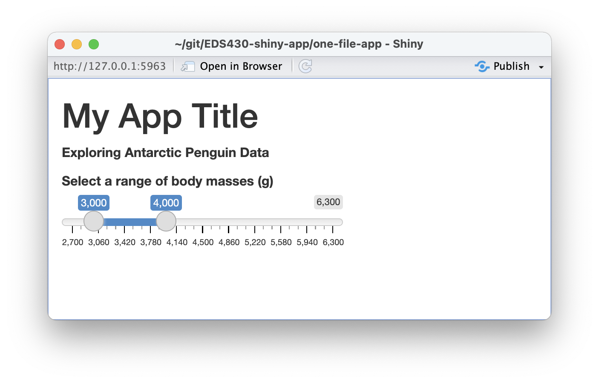
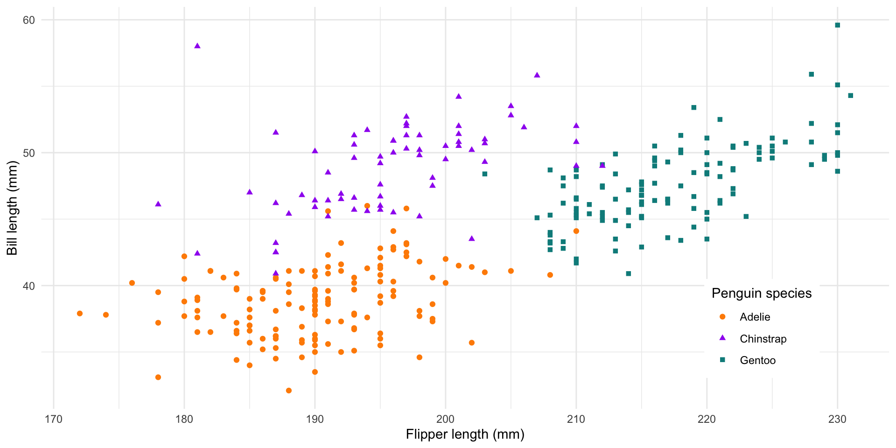
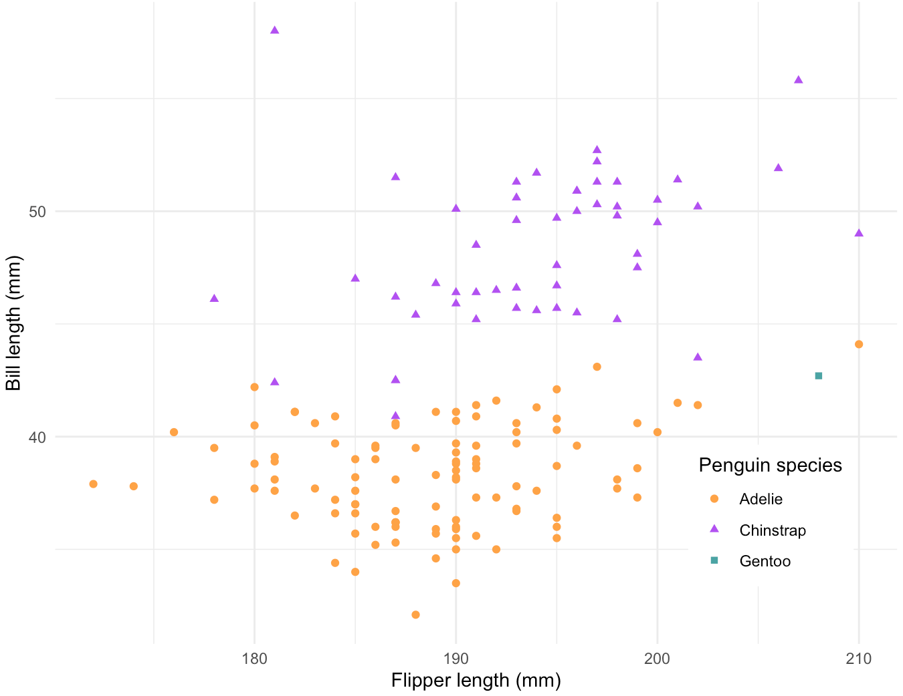
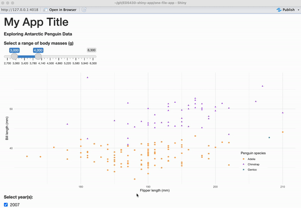

And we saw that reactivity automatically occurs whenever we use an input value to render an output object.
![A gif of our current Shiny app, demonstrating reactivity. At the top left of our app is the title, 'My App Title' in large header font. Beneath it is a subtitle, 'Exploring Antarctic Penguins and Temperatures'. Below the subtitle is the slider input with the label, 'Select a range of body masses (g)'. A gray horizontal slider bar ranges from the values 2,700 to 6,300. The interactive slider value selectors are two round white circles, which, when moved apart from one another highlight the selected value range in blue. The user is adjusting the slider value selectors and the scatterplot of penguin bill length (mm) vs. flipper length (mm) is automatically updating.](images/part2/reactive-app-v1.gif)
EDS 430: Part 2.1
Building a single-file app
Building out your 1st app
Here, we’ll create our first reactive objects and establish a general Shiny coding workflow
Learning Objectives - App #1 (single-file app)
By the end of building out this first app, you should be a bit more familiar with:
writing a single-file (app.R) shiny app
adding and styling text in the UI using tags
practicing data wrangling and visualization outside of your shiny app
following a general workflow for building reactive apps, which includes adding inputs and outputs to the UI, then writing the server instructions on how to assemble user input values into outputs
running and quitting apps in RStudio
Packages introduced:
{shiny}: framework for building our reactive app + standard widgets
{DT}: interactive datatable widgets (that can be made reactive using shiny!)
{tidyverse}: collection of packages for wrangling & visualizing data
{palmerpenguins}: data
Roadmap for App #1
We’ll start by building a small single-file app using data from the {palmerpenguins} package. We’ll build out the the following features:
(a) A title and subtitle
(b) A slider widget for users to select a range of penguin body masses
(c) A reactive scatterplot that updates based on user-supplied values
Add text in the UI
We’ll do this in the UI within fluidPage(), a layout function that sets up the basic visual structure of the page and scales components in real time to fill all available browser width. Add a title and subtitle to your app (be sure to separate each with a comma, ,), save, and run:
Style text in the UI
Recall that the UI is actually just an HTML document. We can style our text by adding static HTML elements using tags – a list of functions that parallel common HTML tags (e.g. <h1> == tags$h1()) The most common tags also have wrapper functions (e.g. h1()).
What are inputs and outputs?
Next, we will begin to add some inputs and outputs to our UI inside fluidPage() (anything that you put into fluidPage() will appear in our app’s user interface…and we want inputs and outputs to show up there!).
Inputs (or widgets) are the things that users can interact with (e.g. toggle, slide) and provide values to your app.
Outputs are the R objects that your user sees (e.g. tables, plots). Outputs respond when a user interacts with / changes an input value.
Examples of input & output functions
The shiny package comes with a number of input and output functions, but you can extend these with additional packages (e.g. shinyWidgets, plotly, DT, etc.; more on those later).
Examples of Input Functions:
actionButton()
checkboxInput()
checkboxGroupInput()
dateInput()
dateRangeInput()
radioButtons()
selectInput()
sliderInput()
textInput()
See a full list of shiny input functions
Examples of Output Functions:
dataTableOutput() (inserts an interactive table)
imageOutput() (inserts an image)
plotOutput() (inserts a plot)
tableOutput() (inserts a table)
textOutput() (inserts text)
See a full list of shiny output functions
Adding our reactive plot
Next, we’ll create a scatterplot of penguin bill lengths vs. penguin flipper lengths using the penguins data set from the {palmerpengiuns} package. We will make this scatterplot reactive by adding a sliderInput that allows users to filter the displayed data points by selecting a range of penguin body masses (e.g. only plot bill and flipper lengths for penguins with body masses ranging from 4,500 grams to 6,000 grams).
To create a reactive plot, we will follow these steps:
(1) Add an input (e.g. sliderInput) to the UI that users can interact with
(2) Add an output (e.g. plotOutput) to the UI that creates a placeholder space to fill with our eventual reactive output
(3) Tell the server how to assemble inputs into outputs
Input function syntax
All input functions have the same first argument, inputId (NOTE: Id not ID), which is used to connect the front end of your app (the UI) with the back end (the server). For example, if your UI has an inputId = "name", the server function will access that input value using the syntax input$name. The inputId has two constraints:
(1) it must be a simple string containing only letters, numbers, and underscores,
(2) it must be unique within your app.
Most input functions have a second parameter called label, which is used to create a human-readable label for the control, which will appear in the UI.
The remaining arguments are unique to each input function. Oftentimes, these include a value parameter, which lets you set the default value of your widget, where applicable.
A couple examples:
Check out the interactive Shiny Widgets Gallery to learn how to implement the most common widgets.
Step 1: Add an input to your app
First let’s add a sliderInput() that will allow users to select a range of penguin body masses (g).
When you run your app, you should see something similar to the image below. It’s operable, but does not yet have an associated output.

Output function syntax
Outputs in the UI create placeholders which are later filled by the server function.
Similar to input functions, all output functions take the same first argument, outputId (again, note Id not ID), which connects the front end UI with the back end server. For example, if your UI contains an output function with an outputId = "plot", the server function will access it (or in other words, know to place the plot in that particular placeholder) using the syntax output$plot.
A couple examples:
Step 2: Add an output to your app
Let’s now add a plotOutput(), which will be updated based on the user inputs via the sliderInput(), then run the app.
~/one-file-app/app.R
# user interface ----
ui <- fluidPage(
# ~ previous code omitted for brevity ~
# body mass slider input ----
sliderInput(inputId = "body_mass_input", label = "Select a range of body masses (g):",
min = 2700, max = 6300, value = c(3000, 4000)),
# body mass plot ouput ----
plotOutput(outputId = "bodyMass_scatterplot_output")
)Where’s my output??
Okay, it looks like nothing changed?? Remember, *Output() functions create placeholders, but we have not yet written the server instructions on how to fill and update those placeholders. We can inspect the HTML and see that there is, in fact, a placeholder area awaiting our eventual output, which will be a plot named “bodyMass_scatterplot_output”:
Render outputs with render*() functions
Each *Output() function in the UI is coupled with a render*() function in the server, which contains the “instructions” for creating the output based on user inputs (or in other words, the instructions for making your output reactive).
Examples of *Output() functions and their corresponding render*() functions:
| Output function | Render function |
|---|---|
dataTableOutput() |
renderDataTable() |
imageOutput() |
renderImage() |
plotOutput() |
renderPlot() |
tableOutput() |
renderTable() |
textOutput() |
renderText() |
Step 3: Tell the server how to assemble inputs into outputs
Now that we’ve designed our input / output in the UI, we need to write the server instructions (i.e. write the server function) on how to use the input value(s) (i.e. penguin body mass range via a slider input) to update the output (scatter plot).
The server function is defined with two arguments, input and output, both of which are list-like objects. You must define both of these arguments within the server function. input contains the values of all the different inputs at any given time, while output is where you’ll save output objects to be displayed in the app.
This part can be intimidating, but if you follow these three rules, you will successfully create reactivity within your shiny app!
Rules:
Save objects you want to display to output$<id>
Build reactive objects using a render*() function
Access input values with input$<id>
Rule 1: Save objects you want to display to output$<id>
~/one-file-app/app.R
# load packages ----
library(shiny)
# user interface ----
ui <- fluidPage(
# ~ previous code omitted for brevity ~
# body mass slider ----
sliderInput(inputId = "body_mass_input", label = "Select a range of body masses (g):",
min = 2700, max = 6300, value = c(3000, 4000)),
# body mass plot output ----
plotOutput(outputId = "bodyMass_scatterplot_output")
)
# server instructions ----
server <- function(input, output) {
# render penguin scatter plot ----
output$bodyMass_scatterplot_output <- # code to generate plot here
}In our UI, we created a placeholder for our plot using the plotOutput() function and gave it the Id "bodyMass_scatterplot_output".
In our server, we will save our plot to the output argument by its outputId.
Note: In the UI, our outputId is quoted ("bodyMass_scatterplot_output"), but not in the server (bodyMass_scatterplot_output).
Rule 2: Build reactive objects with render*()
Use the appropriate render*() function to make your output reactive (e.g. if you have a plotOutput in your UI, you will need to use renderPlot() in your server). Within your render*(), write any code inside a set of curly braces, {}. This allows you to include as many lines of code as it takes to build your object.
~/one-file-app/app.R
# load packages ----
library(shiny)
# user interface ----
ui <- fluidPage(
# ~ previous code omitted for brevity ~
# body mass slider ----
sliderInput(inputId = "body_mass_input", label = "Select a range of body masses (g):",
min = 2700, max = 6300, value = c(3000, 4000)),
# body mass plot output ----
plotOutput(outputId = "bodyMass_scatterplot_output")
)
# server instructions ----
server <- function(input, output) {
# render penguin scatter plot ----
output$bodyMass_scatterplot_output <- renderPlot({
# code to generate plot here
})
}An Aside: Draft objects in a separate script first
I find it easier to experiment and draft my objects (e.g. plots) first in a separate script (outside my app directory), then copy the code over to the server after. I want to make a plot that looks like this:
~/scratch/practice-script-app1.R
# load packages ----
library(palmerpenguins)
library(tidyverse)
# create scatterplot ----
ggplot(na.omit(penguins),
aes(x = flipper_length_mm, y = bill_length_mm,
color = species, shape = species)) +
geom_point() +
scale_color_manual(values = c("Adelie" = "darkorange", "Chinstrap" = "purple", "Gentoo" = "cyan4")) +
scale_shape_manual(values = c("Adelie" = 19, "Chinstrap" = 17, "Gentoo" = 15)) +
labs(x = "Flipper length (mm)", y = "Bill length (mm)",
color = "Penguin species", shape = "Penguin species") +
theme_minimal() +
theme(legend.position = c(0.85, 0.2),
legend.background = element_rect(color = "white"))
Copy your plot code into the server
Copy your code over to your app, placing it inside the {} (and make sure to add any additional required packages to the top of your app.R script). Run your app. What do you notice?
~/one-file-app/app.R
# load packages ----
library(shiny)
library(palmerpenguins)
library(tidyverse)
# user interface ----
ui <- fluidPage(
# ~ previous code omitted for brevity ~
# body mass slider ----
sliderInput(inputId = "body_mass_input", label = "Select a range of body masses (g):",
min = 2700, max = 6300, value = c(3000, 4000)),
# body mass plot output ----
plotOutput(outputId = "bodyMass_scatterplot_output")
)
# server instructions ----
server <- function(input, output) {
# render penguin scatter plot ----
output$bodyMass_scatterplot_output <- renderPlot({
ggplot(na.omit(penguins),
aes(x = flipper_length_mm, y = bill_length_mm,
color = species, shape = species)) +
geom_point() +
scale_color_manual(values = c("Adelie" = "#FEA346", "Chinstrap" = "#B251F1", "Gentoo" = "#4BA4A4")) +
scale_shape_manual(values = c("Adelie" = 19, "Chinstrap" = 17, "Gentoo" = 15)) +
labs(x = "Flipper length (mm)", y = "Bill length (mm)",
color = "Penguin species", shape = "Penguin species") +
theme_minimal() +
theme(legend.position = c(0.85, 0.2),
legend.background = element_rect(color = "white"))
}) A non-reactive plot now lives in our plotOutput() placeholder
We have a plot (yay!), but it isn’t reactive. We have not yet told the server how to update the plot based on user inputs via the sliderInput() in the UI. Let’s do that next…
Practice filtering data in our separate script
First, create a new data frame where we filter the body_mass_g column for observations within a specific range of values (in this example, values ranging from 3000 - 4000):
Then, plot the new filtered data frame:
~/scratch/practice-script-app1.R
# plot new, filtered data ----
ggplot(na.omit(body_mass_df), # plot 'body_mass_df' rather than 'penguins' df
aes(x = flipper_length_mm, y = bill_length_mm,
color = species, shape = species)) +
geom_point() +
scale_color_manual(values = c("Adelie" = "#FEA346", "Chinstrap" = "#B251F1", "Gentoo" = "#4BA4A4")) +
scale_shape_manual(values = c("Adelie" = 19, "Chinstrap" = 17, "Gentoo" = 15)) +
labs(x = "Flipper length (mm)", y = "Bill length (mm)",
color = "Penguin species", shape = "Penguin species") +
theme_minimal() +
theme(legend.position = c(0.85, 0.2),
legend.background = element_rect(color = "white"))
Which part of our code needs to be updated when a user changes the slider range input?
Rule 3: Access input values with input$<id>
Recall that in our UI, we gave our sliderInput() an inputId = "body_mass_input".
~/one-file-app/app.R
# load packages (omitted for brevity) ----
# user interface ----
ui <- fluidPage(
# ~ previous code omitted for brevity ~
# body mass slider ----
sliderInput(inputId = "body_mass_input", label = "Select a range of body masses (g):",
min = 2700, max = 6300, value = c(3000, 4000)),
# body mass plot output ----
plotOutput(outputId = "bodyMass_scatterplot_output")
)
# server instructions ----
server <- function(input, output) {
# render the scatter plot ----
output$bodyMass_scatterplot_output <- renderPlot({
ggplot(na.omit(penguins, aes(...)) + # etc. (omitted for brevity)
})
}Rule 3: Access input values with input$<id>
~/one-file-app/app.R
# load packages (omitted for brevity) ----
# user interface ----
ui <- fluidPage(
# ~ previous code omitted for brevity ~
# body mass slider ----
sliderInput(inputId = "body_mass_input", label = "Select a range of body masses (g):",
min = 2700, max = 6300, value = c(3000, 4000)),
# body mass plot output ----
plotOutput(outputId = "bodyMass_scatterplot_output")
)
# server instructions ----
server <- function(input, output) {
# filter body masses ----
body_mass_df <- reactive({
penguins |>
filter(body_mass_g %in% c(input$body_mass_input[1]:input$body_mass_input[2]))
})
# render the scatter plot ----
output$bodyMass_scatterplot_output <- renderPlot({
ggplot(na.omit(body_mass_df(), aes(...)) +
# etc. (omitted for brevity)
})
}In our server, we can access the values of that slider input using the syntax, input$body_mass_input. If you want your output to change according to the input values, substitute hard-coded values (e.g. 3725:5191) with the input values from the UI. For example, c(input$body_mass_input[1]:input$body_mass_input[2]).
Importantly, we need to use reactive() to create reactive data frames that update with user inputs. When you call your reactive data frame in your ggplot, the data frame name must be followed by ().
Okay, RUN THAT APP!
You should now have a reactive Shiny app! Note that reactivity automatically occurs whenever you use an input value to render an output object.
Recap: We created our first reactive Shiny app following these steps:
(1) We created an app.R file in it’s own directory and began our app with the template, though you can also create a two-file Shiny app by using separate ui.R and server.R files.
(2) We added an input to the fluidPage() in our UI using an *Input() function and gave it a unique inputId (e.g. inputId = "unique_input_Id_name")
(3) We created a placeholder for our reactive object by using an *Output() function in the fluidPage() of our UI and gave it an outputId (e.g. outputId = "output_Id_name")
(4) We wrote the server instructions for how to assemble inputs into outputs, following these rules:
save objects that you want to display to output$<id>
build reactive objects using a render*() function (and similarly, build reactive data frames using reactive()
access input values with input$<id>
And we saw that reactivity automatically occurs whenever we use an input value to render an output object.
Exercise 1: Add another reactive widget
The {DT} package provides an R interface to the JavaScript library DataTables (you may have already used the {DT} package in your knitted RMarkdown / Quarto HTML documents). DT datatables allow for filtering, pagination, sorting, and lots of other neat features for tables on your HTML pages.
Working alone or in groups, add a reactive DT datatable to your app with a checkboxGroupInput that allows users to select which year(s) to include in the table. Configure your checkboxGroupInput so that the years 2007 and 2008 are pre-selected.
In the end, your app should look something like the example to the right.

See next slide for some tips on getting started!
Exercise 1: Tips
Use ?checkboxGroupInput to learn more about which arguments you need (remember, all inputs require an inputId and oftentimes a label, but there are others required to make this work as well)
Both {shiny} and {DT} packages have functions named dataTableOutput() and renderDataTable() – DT::renderDataTable() allows you to create both server-side and client-side DataTables and supports additional DataTables features while shiny::renderDataTable() only provides server-side DataTables. Be sure to use the one from the {DT} package using the syntax packageName::functionName().
There are lots of ways to customize DT tables, but to create a basic one, all you need is DT::dataTable(your_dataframe)
And remember to follow the steps outlined on the previous slides:
(1) Add an input (e.g. checkboxGroupInput) to the UI that users can interact with
(2) Add an output (e.g. DT::datatableOutput) to the UI that creates a placeholder space to fill with our eventual reactive output
(3) Tell the server how to assemble inputs into outputs following 3 rules:
Save objects you want to display to output$<id>
Build reactive objects using a render*() function
Access input values with input$<id>
See next slide for a solution!
Exercise 1: A solution
Press the right arrow key to advance through the newly added lines of code.
~/one-file-app/app.R
# load packages ----
library(shiny)
library(palmerpenguins)
library(tidyverse)
library(DT)
# user interface ----
ui <- fluidPage(
# app title ----
tags$h1("My App Title"),
# app subtitle ----
h4(strong("Exploring Antarctic Penguin Data")),
# body mass slider input ----
sliderInput(inputId = "body_mass_input", label = "Select a range of body masses (g)",
min = 2700, max = 6300, value = c(3000, 4000)),
# body mass plot output ----
plotOutput(outputId = "bodyMass_scatterplot_output"),
# year input ----
checkboxGroupInput(inputId = "year_input", label = "Select year(s):",
choices = c(2007, 2008, 2009), # or `unique(penguins$year)` | NOTE: update checkbox display name by using "New name" = "observation name" (e.g "The year 2007" = 2007)
selected = c(2007, 2008)),
# DT output ----
DT::dataTableOutput(outputId = "penguin_DT_output")
)
# server instructions ----
server <- function(input, output) {
# filter body masses ----
body_mass_df <- reactive({
penguins |>
filter(body_mass_g %in% input$body_mass_input[1]:input$body_mass_input[2]) # return observations where body_mass_g is "in" the set of options provided by the user in the sliderInput
})
# render the scatterplot output ----
output$bodyMass_scatterplot_output <- renderPlot({
ggplot(na.omit(body_mass_df()),
aes(x = flipper_length_mm, y = bill_length_mm,
color = species, shape = species)) +
geom_point() +
scale_color_manual(values = c("Adelie" = "darkorange", "Chinstrap" = "purple", "Gentoo" = "cyan4")) +
scale_shape_manual(values = c("Adelie" = 19, "Chinstrap" = 17, "Gentoo" = 15)) +
labs(x = "Flipper length (mm)", y = "Bill length (mm)",
color = "Penguin species", shape = "Penguin species") +
theme_minimal() +
theme(legend.position = c(0.85, 0.2),
legend.background = element_rect(color = "white"))
})
# filter for years ----
years_df <- reactive({
penguins |>
filter(year %in% c(input$year_input)) # return observations where year is "in" the set of options provided by the user via the checkboxGroupInput
})
# render the DT::datatable ----
output$penguin_DT_output <- DT::renderDataTable({
DT::datatable(years_df(),
options = list(pagelength = 10),
rownames = FALSE)
})
}
# combine UI & server into an app ----
shinyApp(ui = ui, server = server)Common mistakes to look out for
It’s inevitable that you’ll make mistakes here and there as you build out your app…and they can be frustrating to catch. A few that I find myself making over and over again:
misspelling inputId as inputID (or outputId as outputID)
misspelling your inputId (or outputId) name in the server (e.g. UI: inputId = "myInputID", server: input$my_Input_ID)
repeating inputIds (each must be unique)
forgetting to separate UI elements with a comma, ,
forgetting the set of parentheses when calling the name of a reactive data frame (e.g. ggplot(my_reactive_df(), aes(...)))

End part 2.1
Up next: building out a two-file app
05:00